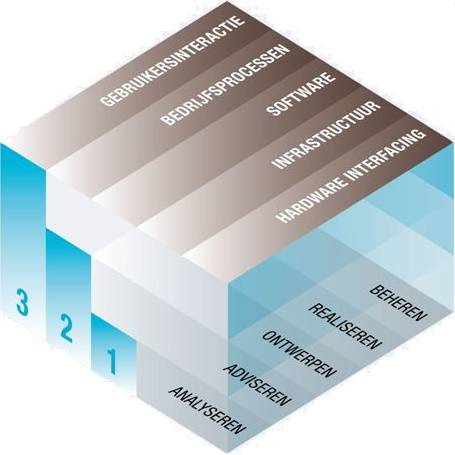

De opleiding Informatica geeft competentiegericht onderwijs, waarbij de competenties afgeleid zijn van de domeinbeschrijving van de Bachelor of ICT.
De domeinbeschrijving van de Bachelor of ICT dient als functioneel kwalificatiekader voor hogescholen in samenwerking met werkgevers, gericht op de startbekwaamheid van ict-professionals van de toekomst. Vrijwel elk facet van het maatschappelijke, zakelijke, sociale en persoonlijke leven is afhankelijk van ict. Ict is niet alleen zelf een belangrijke sector van economische bedrijvigheid, het is ook een onmisbare motor voor innovatie in alle kennisintensieve domeinen in onze samenleving. Nederland heeft grote behoefte aan kwalitatief goed opgeleide ict’ers. Het ict-domein verbreedt en verdiept zich: er ontstaat voortdurend vraag naar nieuwe types ict’er. Om in te kunnen spelen op nieuwe toepassingen, arbeidsmarktvragen, wensen, innovaties en hypes is regelmatige actualisering van de beschrijving van de Bachelor of ICT noodzakelijk. Het model geeft een systematische beschrijving van het domein van de Bachelor of ICT. Hiermee krijgen opleidingen de ruimte om zich binnen het model te positioneren. Het model heeft drie dimensies: activiteiten, architectuurlagen en beheersingsniveau's. Onderstaande weergave geeft een schematische weergave van het model.
Per specialisatie is door de curriculum commissie vastgesteld wat de te behalen beheersingniveau's zijn (de eindcompetenties). Vervolgens is door de curriculum commissie bepaald hoe de competenties van de verschillende modules in het curriculum opleiden tot de eindcompetenties.
Deze database toont de opbouw van het curriculum van de opleiding Informatica. Onder de menuoptie eindcompetenties worden de eindcompetenties per specialisatie getoond. Het is mogelijk om de opbouw van de competenties te volgen per periode en te zien welke modules bijdragen aan de competentie opbouw. Onder de menuoptie Overzicht alle modules worden per module de te behalen competenties getoond. Tevens wordt van elke module getoond hoe deze competenties worden behaald in termen van eindeisen.